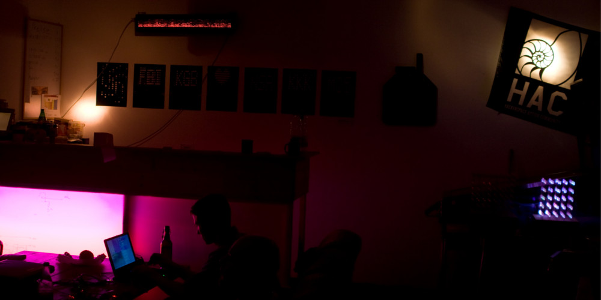
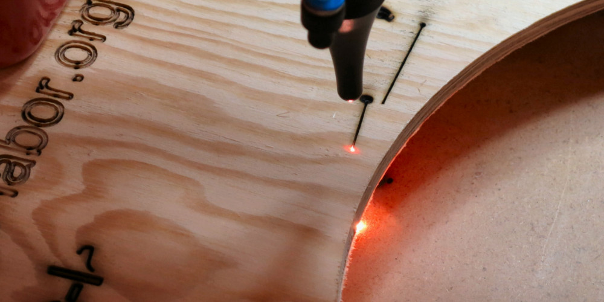
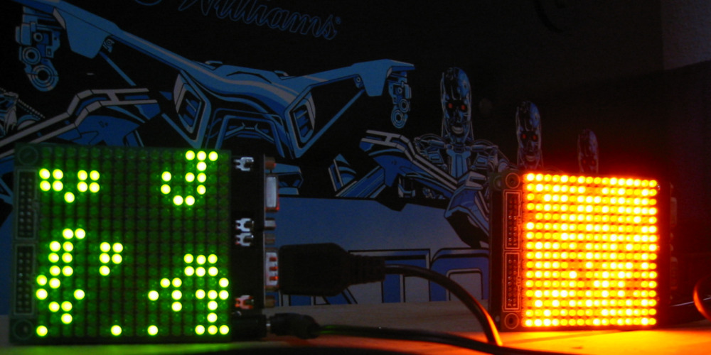

Zwischen den Haltestellen Bochumer Verein / Jahrhunderthalle, Annastraße und Bochum West befindet sich das neue Labor, westlich der Bochumer Innenstadt -- in der Alleestraße 50 neben der Sparkasse im Hof.

Bei diesem Projekt möchten wir einen Schneidlaser bauen, der stark genug ist, um Material zu schneiden oder Oberflächen zu gravieren. Die Leistung hängt maßgeblich vom eingesetzten Laser ab. Der finale Aufbau soll ähnlich einem X/Y-Plotter aufgebaut werden. Statt des Stifts wird der Laserstrahl auf das Material gelenkt. Haupteinsatzgebiet dürfte dann das direkte Erstellen von PCBs aus unbeschichteten Platten sein.

Der Borg16 ist eine auf Andres originalem 16x16 Borg basierende, professionell hergestellte Platine zur Ansteuerung von 256 Leds. Üblicherweise sind diese als eine Matrix von 16x16 Leds angeordnet, aber auch andere Formate sind möglich. Sie bietet eine serielle Schnitstelle und einen Anschluss für bis zu zwei Joysticks im 9-Pin Atari-Standard. Zusätzlich kann ein Canbus-Controller oder RMF12 Funkmodul zur Vernetzung bestückt werden.